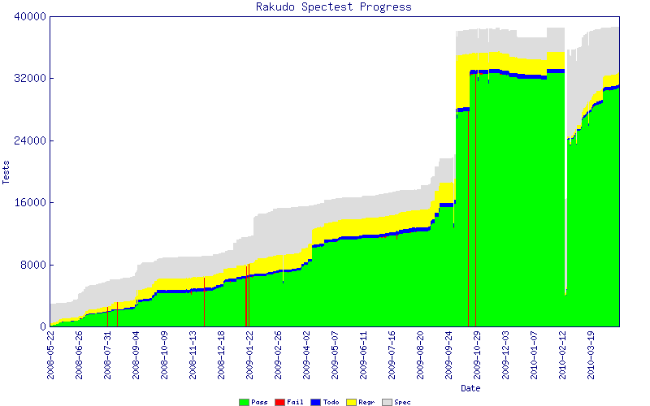

Perl 6
Eine Einführung für Perl 5 Programmierer
Moritz Lenz <moritz@faui2k3.org>
#perl6
Perl 6 - Übersicht
- Allgemeines
- Unterschiede 5 => 6 am Beispiel erklärt
- Subs und Signaturen
- Objektsystem
- Regexes
- Grammatiken
Was ist Perl 6?
- Sprachspezifikation
- Mehrere Compiler
(wie bei C, C++, Fortran, python, ...)
- Test suite
- Standard-Grammatik (STD.pm6)
Beziehung zu Perl 5
- Als Nachfolger von Perl 5 gedacht
- Aber Perl 5 wurde weiter entwickelt
- "Two languages from the Perl family" -- Larry Wall
Compiler
- mildew, perlito, elf, pugs, sprixel, yapsi
- Rakudo <http://rakudo.org/>
=> für die Beispiele hier
Rakudo
- Setzt auf der Parrot Virtual Machine auf
- Kompiliert source code nach Bytecode, führt direkt aus
- Monatliche Releases
- Entwickler: v.a. Patrick Michaud, Jonathan Worthington
Rakudo installieren
git clone http://github.com/rakudo/rakudo.git
cd rakudo
perl Configure.pl --gen-parrot
make install
export PATH=$PATH:`pwd`/parrot_install/bin
perl6 -e 'say "success"'
Rakudo: Fortschritt

Perl 6: Wie Perl 5:
- Sigils an Variablen, :: für namespaces
- Blocks mit
{...}, subs mit sub
-
if, for, while wie in Perl 5
-
say, given/when, smart matching nach 5.10 rück-portiert
... nur besser/anders
-
strict als Voreinstellung
- Sigils invariant
@array => @array[$index]
-
if ($condition) { } => if $condition
-
%hash{$var} für Variablen, %hash<literal> für Literale
-
for my $x (@list) { ... } => for @list -> $x { ... } (lambdas)
Beispiel: Wörter zählen in Perl 5
use strict;
use warnings;
my %words;
while (my $line = <STDIN>) {
for ($line =~ /(\w+)/g) {
$words{$1}++;
}
}
my @top_keys = sort { $words{$b} <=> $words{$a} }
keys %words;
for (@top_keys[0..9]) {
print "$words{$_}\t$_\n";
}
Beispiel: Wörter zählen in Perl 6
use v6;
my %words;
for $*IN.lines -> $line {
for $line.words {
%words{$_}++;
}
}
my @top_pairs = %words.sort: { -.value };
for @top_pairs[^10] {
say .value, "\t", .key;
}
Unterschiede (I)
-
while (my $line = <STDIN>) => for $*IN.lines -> $line
-
$*IN: "contextual" variable, in dynamischen und lexikalischen Scopes
überschreibbar
-
$*IN.lines: "lazy" Liste der Zeilen (ohne \n)
-
-> $line { ... }: "pointy block" mit Signatur
Unterschiede (II)
-
for ($line =~ /(\w+)/g) => for $line.words
-
Str.words ist neu, könnte man auch als
Str.comb(/\S+/) schreiben
-
$words{$_}++ => %words{$_}++: Sigil invariant
Unterschiede (III)
-
my @top_keys = sort { $words{$b} <=> $words{$a} } keys %words;
=> my @top_pairs = %words.sort: { -.value };
- Ein Hash in list-Kontext ist eine Liste von Paaren
- Alles ist ein Objekt
-
List.sort sortiert nach dem Wert, den eine 1-argument-Closure
zurückgibt
-
.value: Kurz für $_.value
- => @top_pairs enthält sortierte Liste der keys
Unterschiede (IV)
-
@top_keys[0..9] => @top_pairs[^10]
- Array slice
-
^10 ist kurz für 0..9
Subs und Signaturen (I)
sub logarithm($num, $base = 2.7183) {
return log($num) / log($base)
}
say logarithm(4);
say logarithm(4, 2);
Subs und Signaturen (II)
sub swap($a is rw, $b is rw) {
($a, $b) = ($b, $a);
}
swap(my $x = 1, my $y = 3);
say $x;
swap(3, 4);
Benannte Parameter
sub rectangle(:$width!, :$height!, :$char = 'X') {
say $char x $width for ^$height;
}
rectangle char => 'o', width => 8, height => 4;
rectangle :width(20), :height<5>;
Multis
multi sub what(Int $x) { say "Int" }
multi sub what(Str $x) { say "Str" }
multi sub what($x) { say "Something else" }
what('foo');
what([]);
Multis (kürzer)
multi what(Int $) { say "Int" }
multi what(Str $) { say "Str" }
multi what($) { say "Something else" }
what('foo');
what([]);
Multis Einschränkungen, Operatoren
multi postfix:<!>(Int $x) { $x * ($x-1)! }
multi postfix:<!>(Int $x where { $x == 0}) { 1 }
say 5!;
Multis Einschränkungen, Operatoren (kürzer)
multi postfix:<!>(Int $x) { $x * ($x-1)! }
multi postfix:<!>(0) { 1 }
say 5!;
Objektsystem
class Entrepreneur {
has $.balance = 0;
method pay ($amount) {
die "bankrupt" if $amount > $!balance;
say "Paying $amount Euro";
$!balance -= $amount;
}
}
my $e = Entrepreneur.new(balance => 100);
$e.pay(30);
say $e.balance;
$e.pay(120);
Objektsystem im Detail (1)
-
class MeineKlasse { ... } definiert Klasse
-
class A is B { ... } Vererbung
-
has $!private-attribute Privates Attribute
-
has $.foo = has $!foo; method foo { $!foo }
Objektsystem im Detail (2)
-
method die-methode { ... } hat Zugriff auf
self und Attribute
- Klassen haben per Default einen Konstruktor
new
Regexes
- Literale: Buchstaben, Zahlen, \ + Interpunktion
- Metasyntaktisch: \ + Buchstabe, Zahl; (alle) Interpunktion
- Quantoren wie in Perl 5:
?, +, *
-
{12,23} => ** 12..23
{3,} ?> ** 3..*
Whitespace in Regexes
- Whitespace: per Default ignoriert
- Mit dem
:sigspace (oder :s) modifier durch <.ws> ersetzt
Regexes: Gruppierungen
-
( ) bleibt
-
(?: ) => [ ]
- Zeichenklassen
[a-z] => <[a..z]>
- Bennante regexes:
<alpha>, <panic("Syntax error")>
Regexes: Captures
-
"abc" ~~ / ( a (b)) (c) /
- Alle matches in
$/
-
$0 = $/[0], $1 = $/[1] etc.
- Verschachtelte matches:
$/[0] eq "ab", $/[0][0] eq "b", $/[1] eq "c"
- Match-Objekte sind Bäume
Regexes: Benannte Captures
-
'abc23' ~~ /<alpha>+/
- Benannte captures:
$/<alpha> = $<alpha>
- Da
<alpha> quantifiziert ist, ist $<alpha> eine Liste
Grammatiken
grammar URI {
token TOP { <schema> '://' <host>
[ ':' <port> ]? <path> };
token schema { <[a..z]>+ }
token host { [\w+] ** \. }
token port { \d+ }
token path { '/' \S* }
}
my $m = URI.parse('http://perl6.org/');
say $m<schema>;
say $m<path>;
Grammatiken - Vererbung
class URL::HTTP is URI {
token schema { 'http' }
}
for <http://perl6.org/ ftp://cpan.org> -> $url {
my $m = URL::HTTP.parse($url);
print "NOT " unless $m;
say "parsed $url";
}
Grammatiken - Proto Regexes (I)
grammar URI {
token TOP { <schema> '://' <host>
[ ':' <port> ]? <path> };
proto token schema { <...> }
token schema:sym<http> { <sym> }
token schema:sym<https> { <sym> }
token schema:sym<ftp> { <sym> }
...
}
Grammatiken - Proto Regexes (II)
grammar URI::Other is URI {
token schema:sym<irc> { <sym> }
}
for URI, URI::Other -> $grammar {
for <http://perl6.org/
irc://freenode.org/#perl6> -> $url {
say $grammar.parse($url) ?? '[X]' !! '[ ]',
" $grammar.perl(), $url";
}
}